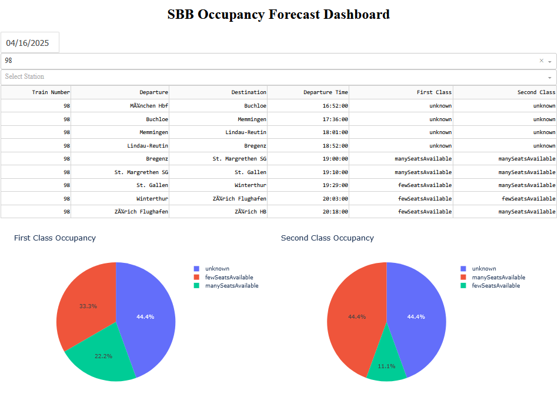

Swiss Public Transportation Data
Analysis of SBB’s Open Data Usage in Third-Party Applications
Introduction
Public transportation plays a crucial role in Switzerland’s mobility infrastructure, with Swiss Federal Railways (SBB) being a key operator. To enhance transparency, innovation, and efficiency, SBB has adopted an open data policy, allowing public access to a variety of transportation datasets. This initiative aligns with Switzerland’s broader commitment to digital transformation and smart mobility solutions.
The SBB Open Data platform provides datasets that include timetables, real-time vehicle positions, historical travel data, and station information. These datasets are used by third-party developers to create applications that improve user experience, optimize travel routes, and integrate multimodal transport options.
This assessment aims to analyse the significance of SBB’s open data, examining its use in third-party applications, identifying the benefits and challenges, and discussing its potential for future developments.
Analysis
Overview of SBB’s Open Data
The SBB Open Data initiative provides access to various datasets through APIs and downloadable files. The main types of data include:
- GTFS (General Transit Feed Specification): Static timetable data used by route planning applications.
- GTFS-RT (General Transit Feed Specification Real-Time): Live updates on train positions, delays, and disruptions.
- HAFAS Realtime API: High-quality real-time journey planning data.
- Station Information: Details on station facilities, accessibility, and services.
- Passenger Flow Data: Historical data on passenger movements for analysis and optimization.
These datasets are available in formats such as CSV, JSON, and XML, making them accessible for integration into various digital platforms.
The SBB data are available on the following platforms:
Accessing SBB Data as a user
For individuals who wants to explore SBB’s open datasets manually, he can follow these steps:
- Visit the SBB Open Data Portal
- The homepage provides an overview of available datasets and categories.
- All datasets are listed in under the tab “Data”
- Browse or Search for Dataset
- Use the search bar or choose the category in the homepage or use the filter datasets available under the tab “Data”
- Click on a dataset to access metadata, descriptions, and downloadable files.
- Download Data
- Most datasets are available in formats like CSV, JSON, or XML.
- Click “Download” to retrieve static datasets for analysis in Excel, Python, or other tools.
- Explore Data Visualization
- Some datasets include built-in charts or maps to provide an interactive preview of the data.
Accessing SBB Data Programmatically (Machines & Developers)
For developers and automated systems, SBB provides APIs and machine-readable formats for :
1. Using APIs for Real-Time Data Access
SBB offers several APIs through the SBB Developer Portal, which require an authentication :
- Register for API Access
- Developers must create an account at SBB Developer Portal.
- API keys may be required for certain datasets.
- Fetch Real-Time Data via API Requests
- Once registered, developers can access data via HTTP requests or using Python scripts
- Data Formats for Integration SBB’s, APIs typically return data in:
- JSON: Ideal for web and mobile applications.
- XML: Used in enterprise transport management systems.
- GTFS-RT: Standardized format for public transport apps like Google Maps and Citymapper.
2. Downloading Static Datasets
For historical analysis or offline applications:
- Direct download links (CSV, JSON) are provided in dataset pages.
- Example dataset URL:
- Occupancy Forecast Dataset: https://data.opentransportdata.swiss/en/dataset/occupancy-forecast-json-dataset
Demonstration visualization of Train Occupancy Levels
To analyze train occupancy levels, I developed an interactive dashboard using Dash and Plotly. The dashboard features two separate pie charts, as shown in Figure 1, illustrating the occupancy distribution for a train journey for first-class and second-class seating.

Description of the Visualization
The pie charts categorize the occupancy levels into three main groups:
“unknown”: No forecast available.
“manySeatsAvailable”: low occupancy, corresponds to one manikin symbol.
“fewSeatsAvailable”: medium occupancy, corresponds to manikins.
“standingRoomOnly”: high occupancy, corresponds to three manikins.The following Python code snippet was used to generate the dash board:
import os
import json
import pandas as pd
import dash
from dash import dcc, html, dash_table, Input, Output
import plotly.express as px
# Define the data directory
data_dir = "file_path//occupancyforecastjson"
# Initialize Dash app
app = dash.Dash(__name__)
app.title = "SBB Occupancy Forecast Dashboard"
# Layout
app.layout = html.Div([
html.H1("SBB Occupancy Forecast Dashboard", style={'textAlign': 'center'}),
# Date Picker
dcc.DatePickerSingle(
id='date-picker',
min_date_allowed=pd.to_datetime("2025-03-11"),
max_date_allowed=pd.to_datetime("2025-12-31"),
initial_visible_month=pd.to_datetime("2025-03-11"),
date=pd.to_datetime("2025-03-11").date()
),
# Dropdowns for filtering
dcc.Dropdown(id='train-filter', placeholder="Select Train Number"),
dcc.Dropdown(id='station-filter', placeholder="Select Station"),
# Data Table
dash_table.DataTable(id='train-table',
columns=[
{"name": "Train Number", "id": "trainNumber"},
{"name": "Departure", "id": "departureStationName"},
{"name": "Destination", "id": "destinationStationName"},
{"name": "Departure Time", "id": "departureTime"},
{"name": "First Class", "id": "firstClass"},
{"name": "Second Class", "id": "secondClass"}
],
page_size=10),
# Simple Charts
html.Div([
dcc.Graph(id='first-class-pie-chart', style={'display': 'inline-block', 'width': '48%'}),
dcc.Graph(id='second-class-pie-chart', style={'display': 'inline-block', 'width': '48%'})
])
])
# Callback to load data based on selected date
@app.callback(
[Output('train-filter', 'options'),
Output('station-filter', 'options'),
Output('train-table', 'data'),
Output('first-class-pie-chart', 'figure'),
Output('second-class-pie-chart', 'figure')],
[Input('date-picker', 'date'),
Input('train-filter', 'value'),
Input('station-filter', 'value')]
)
def update_dashboard(selected_date, train_num, station):
date_folder = os.path.join(data_dir, selected_date)
if not os.path.exists(date_folder):
return [], [], [], px.pie(title="No Data"), px.pie(title="No Data")
all_data = []
for file in os.listdir(date_folder):
with open(os.path.join(date_folder, file), 'r') as f:
data = json.load(f)
for train in data.get("trains", []):
for section in train.get("sections", []):
all_data.append({
"trainNumber": train["trainNumber"],
"departureStationName": section["departureStationName"],
"destinationStationName": section["destinationStationName"],
"departureTime": section["departureTime"],
"firstClass": next((o["occupancyLevel"] for o in section["expectedDepartureOccupancies"] if o["fareClass"] == "firstClass"), "Unknown"),
"secondClass": next((o["occupancyLevel"] for o in section["expectedDepartureOccupancies"] if o["fareClass"] == "secondClass"), "Unknown")
})
df = pd.DataFrame(all_data)
# Filtering
if train_num:
df = df[df['trainNumber'] == train_num]
if station:
df = df[(df['departureStationName'] == station) | (df['destinationStationName'] == station)]
train_options = [{'label': t, 'value': t} for t in df['trainNumber'].unique()]
station_options = [{'label': s, 'value': s} for s in pd.concat([df['departureStationName'], df['destinationStationName']]).unique()]
# Pie Charts for First and Second Class
first_class_counts = df['firstClass'].value_counts().reset_index()
first_class_counts.columns = ['Occupancy', 'Count']
first_class_pie = px.pie(first_class_counts, names='Occupancy', values='Count', title='First Class Occupancy')
second_class_counts = df['secondClass'].value_counts().reset_index()
second_class_counts.columns = ['Occupancy', 'Count']
second_class_pie = px.pie(second_class_counts, names='Occupancy', values='Count', title='Second Class Occupancy')
return train_options, station_options, df.to_dict('records'), first_class_pie, second_class_pie
# Run the app
if __name__ == '__main__':
app.run_server(debug=True)Use Cases in Third-Party Applications
SBB’s open data has been widely adopted by third-party developers to enhance public transportation accessibility and efficiency. Some key applications include:
- Public Transport Navigation Apps
- Google Maps & Citymapper: Use SBB’s GTFS data for real-time trip planning, route suggestions, and multimodal transport integration (trains, buses, trams).
- ÖV Plus: A Swiss-specific app that provides real-time alerts, ticketing services, and personalized travel recommendations.
- SBB Mobile: While developed by SBB itself, it integrates third-party mobility services (e.g., e-scooters, bike-sharing).
- Smart Mobility and Multimodal Transport Solutions
- Swiss Travel Guide: Combines SBB train schedules with local tourism insights, helping visitors plan their trips efficiently.
- Trafi & FAIRTIQ: Integrate SBB’s fare and real-time data to provide automatic, ticketless travel payment solutions.
- Data-Driven Urban Planning & Sustainability Applications
- Traffic Flow Analysis: Government agencies and researchers use historical passenger flow data to optimize infrastructure and manage congestion.
- Eco-Routing & CO₂ Reduction Apps: Some startups leverage SBB’s data to promote sustainable travel choices by calculating the lowest-emission routes.
Benefits of SBB Open Data Usage
- For Improving User Experience
- Better route planning: Users get real-time updates and alternative routes in case of disruptions.
- Increased accessibility: Third-party apps enable multilingual, user-friendly interfaces.
- For Encouraging Innovation
- Startups and developers benefit from free access to transport data, reducing barriers to entry for new mobility solutions.
- Integration with AI and predictive analytics enables smarter, more efficient public transport systems.
- For Public Sector & Economic Benefits
- More efficient urban planning by municipalities.
- Cost savings in infrastructure by optimizing transport flow through data-driven decisions.
Challenges and Limitations
- Data Quality and Reliability Issues
- Latency in real-time updates: Delays in GTFS-RT data can lead to inaccurate predictions.
- Incomplete data sets: Some detailed real-time tracking (e.g., passenger load) is not publicly available.
- Privacy and Security Concerns
- Sensitive data handling: Apps must ensure compliance with Swiss and EU GDPR regulations to protect user location data.
- Potential misuse: Open data can be exploited for unauthorized commercial purposes.
- Technical and Integration Barriers
- Data standardization issues: Ensuring compatibility between SBB data and international transport networks (e.g., Deutsche Bahn, SNCF) remains a challenge.
- API rate limits: Developers may face restrictions on data requests, affecting large-scale applications.
Future Potential and Recommendations
Despite challenges, SBB’s open data presents significant future opportunities:
- AI-driven predictive transport solutions: Using machine learning for demand forecasting to reduce congestion and improve efficiency.
- Expanded multimodal integration: Seamless ticketing across trains, buses, car-sharing, and even autonomous vehicles.
- Cross-border collaboration: Enhancing data-sharing agreements with European rail networks for smoother international travel.
To maximize benefits, SBB should consider expanding real-time datasets, improving data accuracy, and collaborating with developers for enhanced innovation.
Conclusion
The SBB Open Data initiative is a vital component of Switzerland’s digital mobility transformation, enabling third-party developers to create innovative applications that improve public transport efficiency, user experience, and multimodal integration. From navigation apps to smart urban planning tools, SBB’s datasets empower both businesses and public institutions.
However, challenges related to data reliability, privacy concerns, and integration complexities must be addressed to ensure sustained innovation. With continued improvements and strategic collaborations, SBB’s open data ecosystem holds the potential to further revolutionize Swiss public transportation and contribute to smarter, more sustainable mobility solutions.